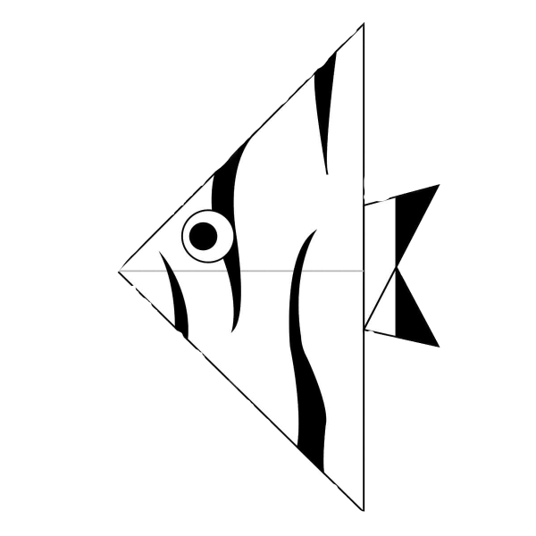
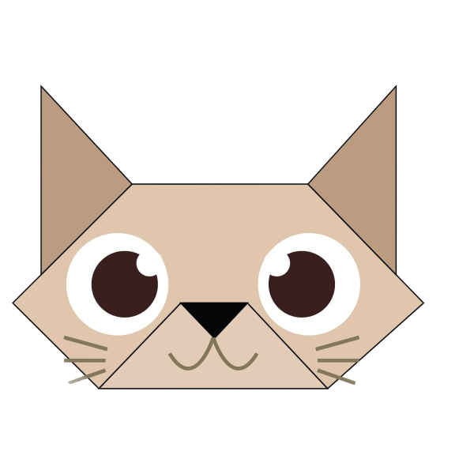

Fish
Step 1) Fold the paper in half both ways and then leave it folded in half.
Step 2) Fold the paper in half again.
Step 3) Open up the top flap of paper over to the right.
Step 4) Squash Fold this flap of paper flat.
Step 5) Turn the paper over.
Step 6) Open up the top flap of paper over to the left and Squash Fold it flat.
Step 7) Rotate the paper 90 degrees.
Step 8) Fold the top flap of the paper down along the dotted line.
Step 9) Fold the top flap of paper at the bottom up along the dotted line.
Step 10) Turn the paper over.
The origami fish is completed
Cat
Step 1) Fold the paper in half.
Step 2) Fold both corners down along the dotted lines.
Step 3) Fold both flaps of paper up along the dotted lines.
Step 4) Fold the top part of the paper down and the bottom two layers up along the dotted lines.
Step 5) Unfold the fold at the bottom and then fold it behind the model using that crease as a guide. Turn the paper over.
Step 6) Fold the top part of the front triangle down along the dotted line.
Step 7) Draw in some eyes and whiskers.
Your origami cat is ready.